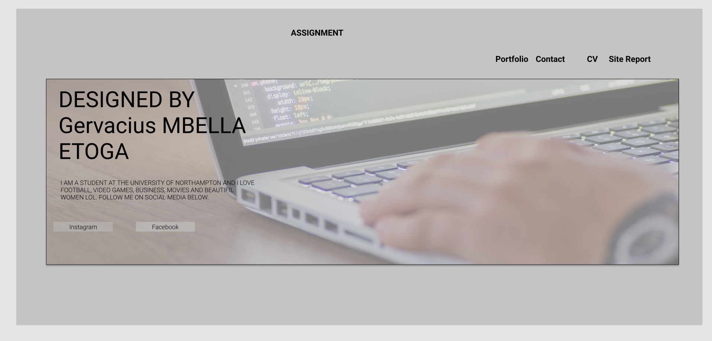

Hi, my name is Gervacius Mbella Etoga and I am a 1st year student at the University of Northampton studying Web Technology and security.
My experience studying this course has been amazing, I learned a lot of new stuff and the lecturer tries his very best to make it as simple as possible.
One of the reasons I chose this course was because I love web designing and I also got some basic knowledge about it while in high school.
Our 1st assignment on the module web development, we were asked to develop a simple website with 5 pages in total (Index.html, site report.html, cv.html, portfolio.html and contact.html)
I started this assignment by 1st using a software called Figma to design how I wanted the website to look like before I started writing any code. See picture below

After this I started by writing the basic HTML code then leter own the css to make it look good. This assignment took me a while because of the design and all the holidays we happy I got it done and happy with the results. Looking forward to assignment 2 and hope to continue to learn new stuff as the 2nd term begins.